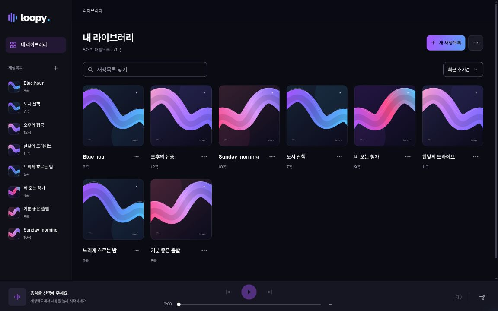
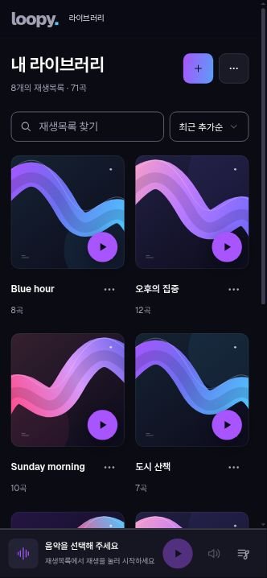

<!doctype html>
<html lang="ko"><meta charset="utf-8"><title>loopy — 좋아하는 음악을, 나만의 흐름으로.</title>
<link rel="stylesheet" href="../../src/shared/ui/fonts.css">
<style>
*{box-sizing:border-box;cursor:none}html,body{margin:0;width:1600px;height:1320px;background:#0b0b14;color:#fff;font-family:'Geist Sans','Pretendard Variable',sans-serif}main{width:1600px;height:1320px;overflow:hidden;position:relative;background:radial-gradient(ellipse at 82% 35%,#15162c 0,transparent 48%),#0b0b14}main:after{content:'';position:absolute;inset:0;border:1px solid #ffffff14;border-radius:24px;pointer-events:none}.brand{display:flex;align-items:center;gap:18px;position:absolute;left:76px;top:62px}.word{font-size:70px;font-weight:760;letter-spacing:-5px;line-height:1}.dot{color:#4cc9ff}.bars{display:flex;align-items:center;gap:6px;width:50px;height:56px}.bars i{width:8px;height:36px;border-radius:20px;background:linear-gradient(110deg,#a855ff 0%,#6c70ef 55%,#4cc9ff 100%);background-size:50px 56px;background-position:0 -10px}.bars i:nth-child(2){height:56px;background-position:-14px 0}.bars i:nth-child(3){height:46px;background-position:-28px -5px}.bars i:nth-child(4){height:24px;background-position:-42px -16px}.eyebrow{position:absolute;top:86px;right:80px;font-size:18px;letter-spacing:5px;font-weight:550;color:#a1a1b3}.headline{position:absolute;top:182px;left:76px;margin:0;font-weight:660;font-size:76px;letter-spacing:-3.6px;line-height:1.24;z-index:2}.headline span{color:#c5c4dc}.wave{position:absolute;right:-90px;top:110px;width:770px;height:370px;opacity:.88}.screen{position:absolute;border:1px solid #5c5c734d;overflow:hidden;box-shadow:0 40px 100px #0006;background:#0b0b14}.desktop{left:76px;top:445px;width:1250px;border-radius:18px}.screen img{width:100%;display:block}.bar{height:28px;background:#15151f;border-bottom:1px solid #ffffff0c;display:flex;align-items:center;gap:6px;padding:0 13px}.bar i{display:block;width:5px;height:5px;background:#777687;border-radius:50%}.phone{left:1230px;top:563px;width:294px;padding:7px;border-radius:30px;border-color:#6b6b8055;background:#15151f;box-shadow:0 24px 80px #0009}.phone img{border-radius:23px}.caption{position:absolute;left:78px;bottom:36px;font-size:16px;letter-spacing:2px;color:#77788e}.rightnote{position:absolute;right:79px;bottom:36px;color:#a1a1b3;font-size:17px;letter-spacing:.4px}
</style><main aria-label="loopy 브랜드 소개와 실제 앱 예시 화면">
<div class="brand"><span class="bars"><i></i><i></i><i></i><i></i></span><span class="word">loopy<span class="dot">.</span></span></div>
<div class="eyebrow">MUSIC, YOUR WAY.</div>
<h1 class="headline">좋아하는 음악을,<br><span>나만의 흐름으로.</span></h1>
<svg class="wave" viewBox="0 0 800 380" fill="none" aria-hidden="true"><defs><linearGradient id="flow" x1="0" y1="150" x2="800" y2="250" gradientUnits="userSpaceOnUse"><stop stop-color="#a855ff"/><stop offset=".52" stop-color="#6c70ef"/><stop offset="1" stop-color="#4cc9ff"/></linearGradient><linearGradient id="edge" x2="800" gradientUnits="userSpaceOnUse"><stop stop-color="#e4c9ff" stop-opacity=".5"/><stop offset="1" stop-color="#4cc9ff" stop-opacity=".2"/></linearGradient></defs><path d="M40 280C110 280 126 50 270 105S420 350 550 240 660 100 840 115" stroke="url(#flow)" stroke-width="64" stroke-linecap="round"/><path d="M40 248C110 248 126 18 270 73S420 318 550 208 660 68 840 83" stroke="url(#edge)" stroke-width="1.6"/><path d="M40 292C110 292 126 62 270 117S420 362 550 252 660 112 840 127" stroke="#050510" stroke-opacity=".13" stroke-width="22"/></svg>
<div class="screen desktop"><div class="bar"><i></i><i></i><i></i></div></div>
<div class="screen phone"></div>
<div class="caption">YOUR COLLECTION. YOUR ORDER. YOUR LOOP.</div><div class="rightnote">loopy.bearsharks.dev ↗</div>
</main><script>if(new URLSearchParams(location.search).has('export')){document.body.style.paddingTop='800px';document.body.style.height='2120px';document.documentElement.style.height='2120px';}</script></html>
